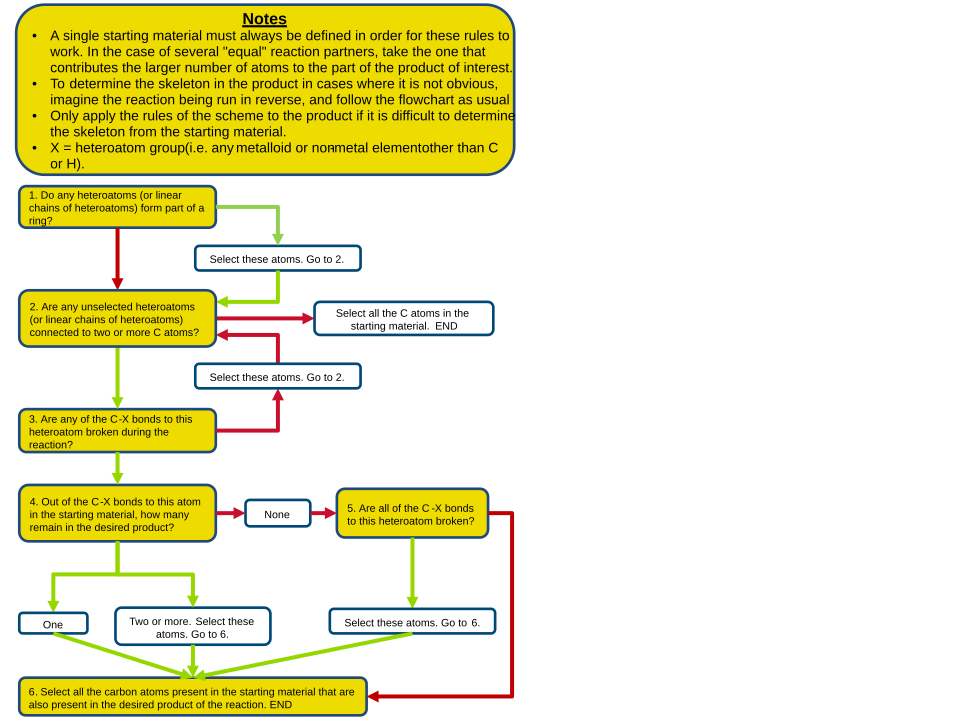

Flowchart skeleton
Flowchart for determination of skeleton

Notes: * A single starting material must always be defined in order for these rules to work. In the case of several "equal" reaction partners, take the one that contributes the larger number of atoms to the part of the product of interest. * To determine the skeleton in the product in cases where it is not obvious, imagine the reaction being run in reverse, and follow the flowchart as usual. * Only apply the rules of the scheme to the product if it is difficult to determine the skeleton from the starting material. * X = heteroatom group (where heteroatom = any non-metal or metalloid element other than C or H).
- Do any heteroatoms (or linear chains of heteroatoms) form part of a ring?
- N: 2
-
Y: Select these atoms. Go to 2.
-
Are any unselected heteroatoms (or linear chains of heteroatoms) connected to two or more C atoms?
- N: Select all the C atoms in the starting material. END
-
Y: 3
-
Are any of the C-X bonds to this heteroatom broken during the reaction?
- N: Select these atoms. Go to 2.
-
Y: 4
-
Out of the C-X bonds to this atom in the starting material, how many remain in the desired product?
- none: 5
- one: 6
-
two or more: Select these atoms. Go to 6.
-
Are all of the C-X bonds to this heteroatom broken?
- N: 6
-
Y: Select these atoms. Go to 6.
-
Select all the carbon atoms present in the starting material that are also present in the desired product of the reaction. END
Version 11 DJB 10th Oct 2008